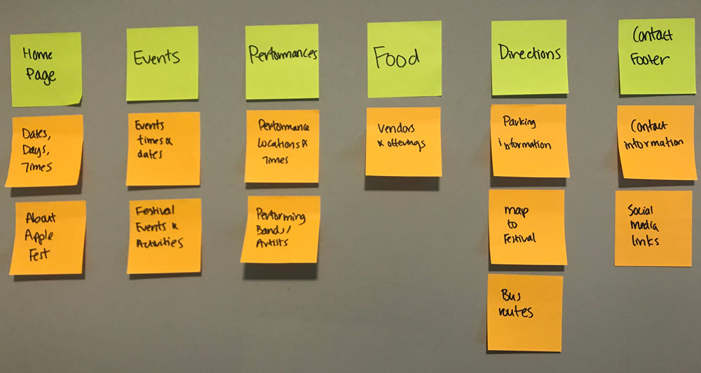

The class project had two parts: first, we had to re-design the website from existing content; second, we had to create a form using Javascript that relates to the website and audience.
I considered what sort of information my target audience would find necessary and/or useful. I wrote out each piece of information on a sticky note, then grouped the information in a way in which users find the most reasonable and convenient.
I coded an initial draft of the website based on the sketches I drew. I conducted user testing on two users, both Cornell students and as close to my target audience as possible. I gave my users four tasks to perform:
| 1 | Suppose you are going to the Apple Festival on Saturday afternoon for two hours. You will be taking the bus from Statler Hall. Find the bus that will take you to the Apple Fest from there. |
| 2 | You are thirsty and a little tired. Find a place that you can buy caffeinated beverages. |
| 3 | You want to attend the Cider Trail event. Find and download the Cider Trail passport so you can print it out before you arrive. |
| 4 | It's almost 3PM. Find a performance you can watch at 3PM and the location of the performance. |
I found a few problems with my initial design that my users found crucial to navigating the website:
To solve the user problems, I decided to add the following features to better the user experience: